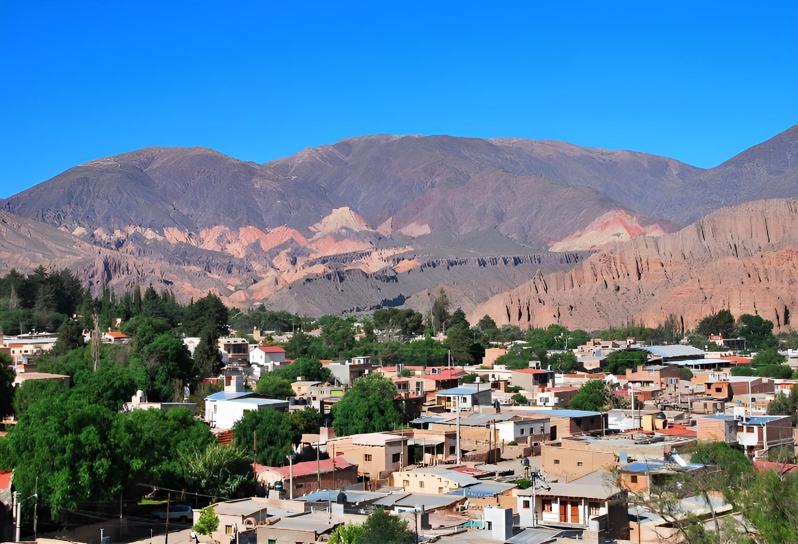

Tilcara: cultura y tradiciones del norte
Tilcara, en la provincia de Jujuy, es un destino lleno de historia, cultura y tradiciones del norte argentino. Rodeado por la impresionante Quebrada de Humahuaca, este pueblo combina paisajes increíbles con un rico patrimonio arqueológico y cultural.
Uno de sus principales atractivos es el Pucará de Tilcara, una fortaleza precolombina que ofrece vistas espectaculares y la posibilidad de conocer más sobre la vida de las comunidades originarias. Además, el pueblo cuenta con museos, mercados de artesanías y festivales tradicionales que muestran la identidad local.
Los visitantes también pueden disfrutar de caminatas por la Quebrada, excursiones a pueblos cercanos y probar la gastronomía regional, que incluye platos típicos como humitas, tamales y quesillos.
La mejor época para visitar es durante la primavera y el verano, cuando el clima es agradable y los paisajes están llenos de color. Tilcara ofrece una combinación perfecta de naturaleza, historia y cultura que hace que cada viaje sea único.
Tilcara es un destino que enamora a quienes buscan conectarse con la tradición y disfrutar de paisajes espectaculares. Una vez que lo conocés, vas a querer volver para seguir explorando la riqueza del norte argentino.
← Volver a Categorías